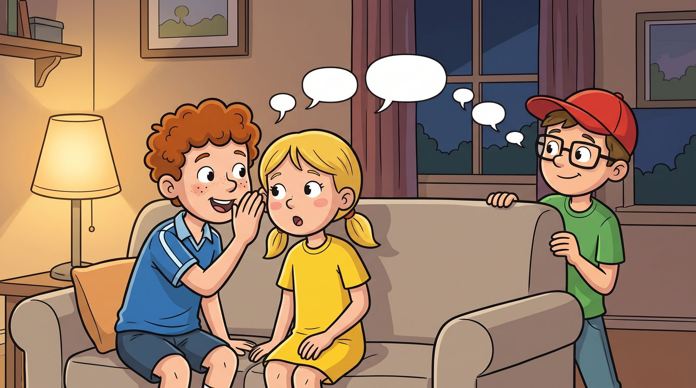
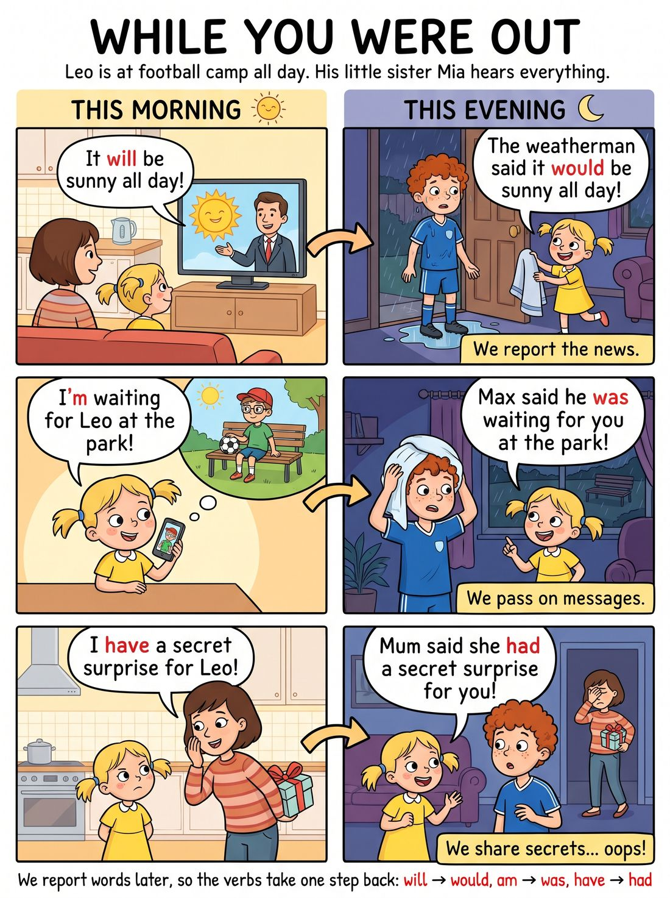
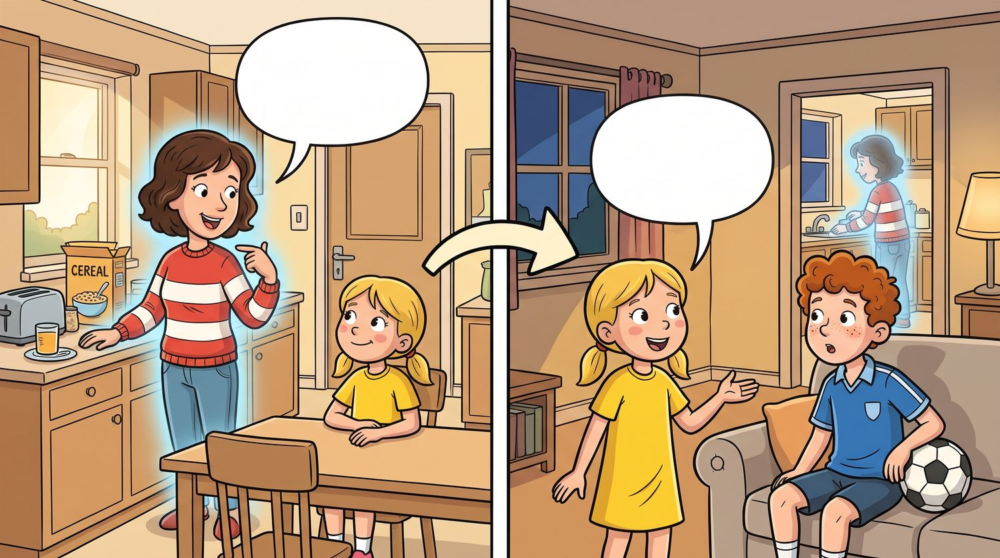
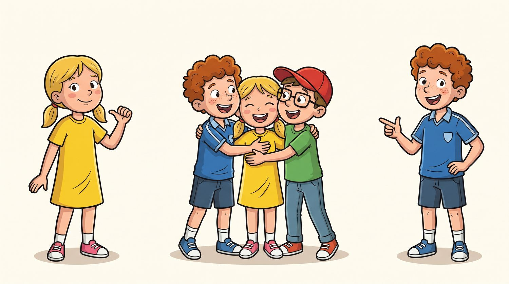
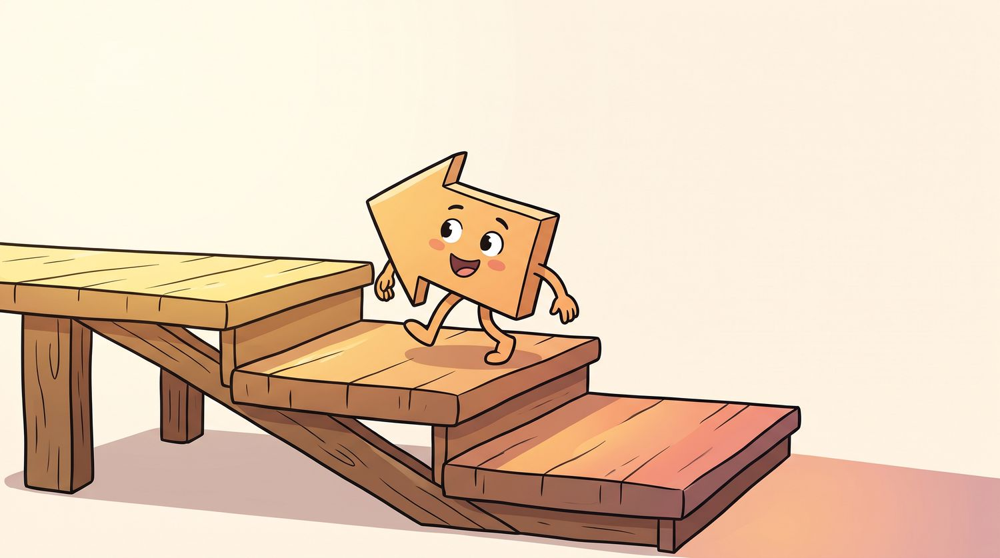
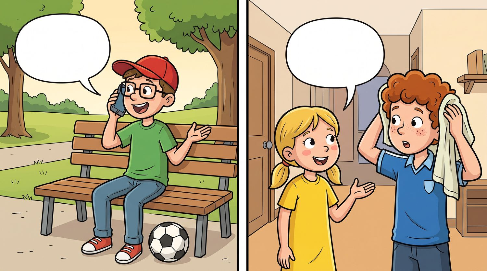
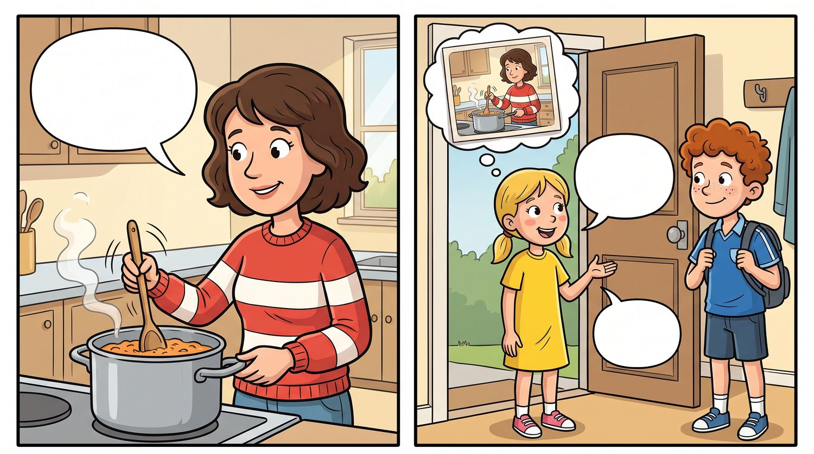
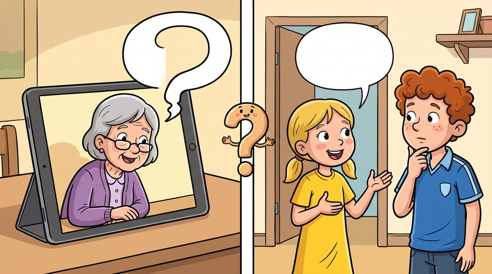
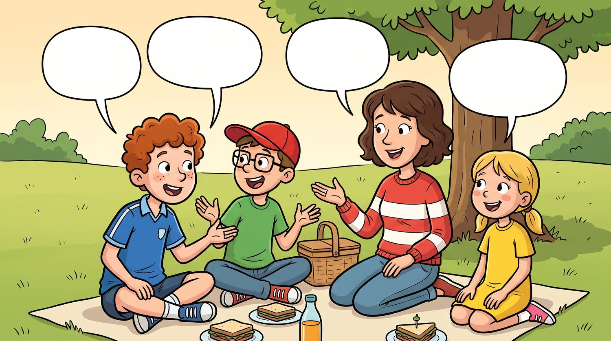

Phase 1 · 5 minutes
While you were out
Leo was at football camp all day. His little sister Mia heard everything. In the evening she tells him. Watch the clip, then read the comic.
What changes in the evening?
Read what the people said in the morning. Then choose what Mia says in the evening.
We tell people later what somebody said. So the verb goes one step back: will → would, am → was, have → had.
DEWir erzählen später weiter, was jemand gesagt hat. Darum geht das Verb einen Schritt zurück.

Phase 2 · 10 minutes
The night messenger
An owl carries Grandma's messages to Mia. Watch carefully: which words change when the owl tells Mia?
DEAchte auf die farbigen Wörter: lila = Person, orange = Verb.
After the video
Phase 3 · 15 minutes
The rules
Five short rules, each with a picture. Read, look, then answer the question under each rule.
A Direct speech or reported speech?

“I’m tired.” Mum said she was tired.Direct speech = the exact words, with “ ”. Reported speech = we tell somebody later what another person said. No “ ”.
- 1Take away “ ”No quotation marks.
- 2said (that)Start with the person + said.
- 3Change the personI → he / she
- 4One step backam → was
No comma before that! Mum said that she was tired. Mum said, that
DEKein Konjunktiv im Englischen: Sie sagte, sie sei müde → She said she was tired.
B Change the person

I · me · my→ he / she · him / her · his / her we · us · our→ they · them · their you · your→ I · me · my (if you mean me)Ask yourself: who is talking now – and about whom?
| Direct speech | Reported speech |
|---|---|
| Tom: “I love my dog.” | Tom said he loved his dog. |
| Lisa: “We are late.” | Lisa said they were late. |
| Max (to me): “You are funny.” | Max said I was funny. |
DEWer spricht jetzt? Aus ich wird er/sie, aus wir wird sie.
C One step back

LATER · pastwas · liked · played NOW · presentam · like · playThe person said the words before. So when we report them, the verb goes one step back into the past.
| Now | One step back |
|---|---|
| am · is | was |
| are | were |
| like · play · love | liked · played · loved |
| have · go · eat | had · went · ate |
DEDas ist die wichtigste Regel: Das Verb geht einen Schritt zurück.
D Simple present → simple past

“I play football every day.” Max said he played football every day.Simple present (play, likes, have) → simple past (played, liked, had).
Careful with he / she / it: “Ben likes pizza.” → She said Ben liked pizza. The -s goes away.
E Present progressive → past progressive

“I’m cooking dinner.” Mum said she was cooking dinner. Yum!Something was happening at that moment, like a photo of the action.
| Now | One step back |
|---|---|
| I am · he/she is + -ing | was + -ing |
| we/you/they are + -ing | were + -ing |
F Questions: “Do you …?” → asked if

“Do you like strawberries?” Grandma asked if you liked strawberries.- 1asked (me) ifnot said
- 2No do / doesand no “?”
- 3Change the personyou → I / he / she …
- 4One step backlike → liked
Also: “Are you OK?” → She asked me if I was OK.
DE„if“ heißt hier „ob“: Sie fragte, ob ich Erdbeeren mag.
Phase 4 · 20 minutes
Your turn
Read what each person says. Write it in reported speech and tap Check. If something is wrong, you get a tip.
DEDenk an die 4 Schritte: „ “ weg · said / asked if · Person ändern · Verb einen Schritt zurück.
A What did they say? 10 min
B The picnic 5 min
Everybody is talking at the picnic. The next day Leo tells Grandma. Choose the right sentence.

“We are hungry!” “I love sandwiches.” “Do you want some juice, Mia?” “The sun is shining!”C Find the right sentence 5 min
Typical mistakes! One sentence is right, one is wrong. Tap the right one.
Word Master · 10 minutes
Word Master
Write the twelve sentences in reported speech. Tap Check all, then save the PDF and send it to your teacher.
DESchreib die Sätze in der indirekten Rede. Dann „Check all“ und als PDF speichern.
Extra practice
Watch it again
A short video that explains reported speech step by step. Watch it at home or when you are finished.